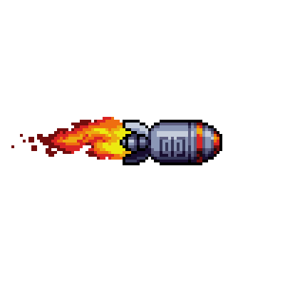
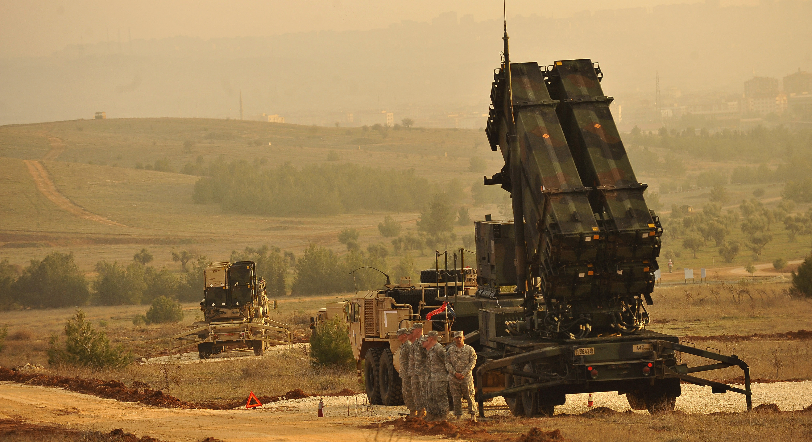

Therac-25
2 more incidents
Simulate: horizontal velocity (BH value)
Drag the slider to see what happens as the rocket accelerates.
What the bits look like (IEEE 754)
64-bit floating point (source) — real IEEE 754 encoding
16-bit signed integer (destination) — what the code tries to squeeze it into


The problem: 1/10 cannot be represented exactly in binary
How the error grows over time
The Dhahran battery had been running for about 100 hours without a reboot.
clock drift
0.3433 s
Scud speed
~1,676 m/s
distance error
~575 m
Tracking gate vs actual Scud position
The Patriot looks for the Scud in a "range gate" — a predicted window. Drift shifts the gate away from reality.
A Brief History
Earlier radiation therapy machines by AECL (Canada). They had hardware safety interlocks — physical mechanisms that physically blocked dangerous beam configurations. Software bugs existed, but the hardware caught them.
AECL builds the Therac-25: smaller, cheaper, more powerful. To save cost, they removed the hardware interlocks and relied entirely on software for safety. The code was written by one programmer.
How the Therac-25 Works
Mode 1: Electron Beam
⚡
Low energy electrons hit the patient directly.
Used for shallow tumors.
No filter needed
Mode 2: X-ray Beam
☢
High energy beam hits a metal target to produce X-rays.
Used for deep tumors.
Metal filter MUST be in place
The machine has a rotating turntable that swings the metal filter in or out of the beam path.
X-ray mode + filter in place = Safe dose
X-ray mode + filter NOT in place = 100x overdose = death
How it happened in code
Shared State
Pseudocode — click Next Step
by a bug that only triggered if you typed fast enough
$370M rocket — integer overflow
28 soldiers — floating point truncation
3 patients — race condition
Bugs that were "too small to matter" — until they weren't.
Any questions?